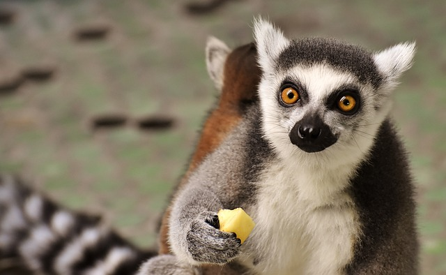

Moje ulubione miejsca do zobaczenia w Irlandii
W Irlandii jest wiele miejsc, które warto odwiedzić. Tu jest parę przykładów!
Klify Moheru
Klify Moheru znajdują się w hrabstwie Clare, skąd pochodzę. Warto je odwiedzić - zobacz, jakie są fajne!

Burren
Burren jest obszarem w hrabstwie Clare i Galway pokrytym nietypowymi formacjami skał wapiennych. Utworzyły go lodowce poruszające się po krajobrazie, wycinające ścieżki w miękkiej skale. Możesz chodzić kilometrami po wapiennych chodnikach: duże płaskie skały oddzielone głębokimi szczelinami.

Burren ma swoją szczególną przyrodę i życie roślinne, ponieważ ma klimat inny niż reszta Irlandii. Możesz zobaczyć kwiaty, które nie rosną nigdzie indziej na obszarze kraju. Nie możesz ich zrywać, ponieważ krajobraz jest chroniony.

Wyspa Achill
To duża wyspa u wybrzeży hrabstwa Mayo. Ma dziki i piękny krajobraz gór, torfowisk i klifów.

Park dzikich zwierząt Fota
Park ochrony przyrody na wyspie Fota, w hrabstwie Cork
To jest jak zoo z pewną różnicą. Idziesz ścieżkami, które prowadzą przez pola żyraf, możesz zobaczyć lemura wiszącego na pobliskim drzewie, mijając stado pingwinów.
Newgrange
Newgrange słynie z grobu korytarzowego. Wąski tunel prowadzi do centrum sztucznego wzgórza. Ktoś ważny został tam pochowany tysiące lat temu i ludzie dla nich zrobili ten grób. Sufit i ściany są wykonane w całości z płaskich kawałków skały ułożonej jedna na drugiej. Jednego ranka każdego roku, podczas przesilenia zimowego, wschodzące słońce oświetla tunel aż do środkowej komory.

Miejsca do odwiedzenia w Dublinie
Dublin jest stolicą Irlandii. Oto kilka rzeczy, które należy tam zobaczyć:
- Zoo w Dublinie
- Muzeum figur Woskowych
- Epicka Irlandia